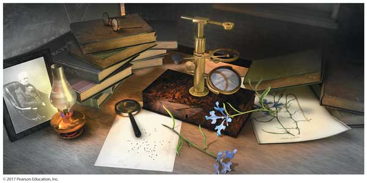

Chapter 2—Atoms, Molecules, and Ions

Chapter 2 powerpoint notes.
Click on the "Charge" button above to see how an ionic compound is organized. Press the Play button to start the simulation. Increase the temperature slider to see it melt—Decrease is to see it freeze!
Simulations
Rutherford Scattering Simulation
How did Rutherford figure out the structure of the atom without being able to see it? Simulate the famous experiment in which he disproved the Plum Pudding model of the atom by observing alpha particles bouncing off atoms and determining that they must have a small core.

| Click to Run |
Atoms, Isotopes, and Nuclide Symbols
Build an atom out of protons, neutrons, and electrons, and see how the element, charge, and mass change. Then play a game to test your ideas!

| Click to Run |
Isotopes and Atomic Masses
Are all atoms of an element the same? How can you tell one isotope from another? Use the sim to learn about isotopes and how abundance relates to the average atomic mass of an element.

| Click to Run |
Slideshare Presentations
A nice presentation that goes over naming ionic compounds and acids.